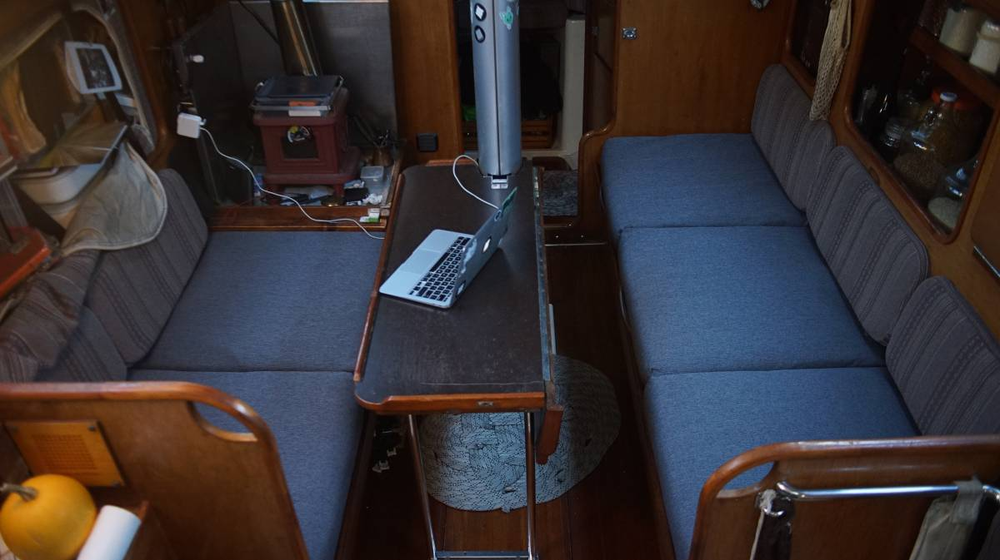
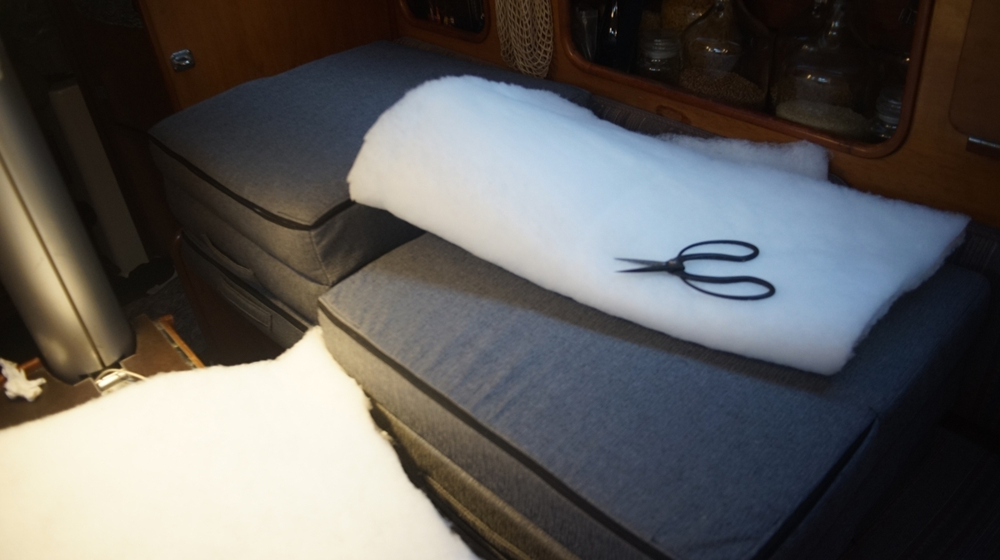
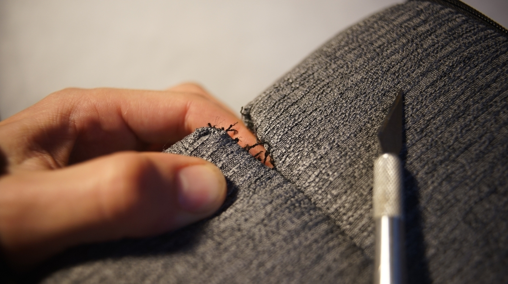
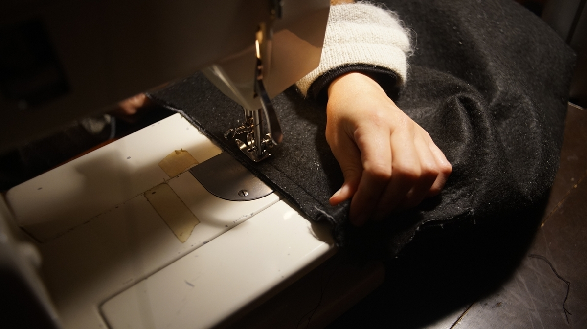
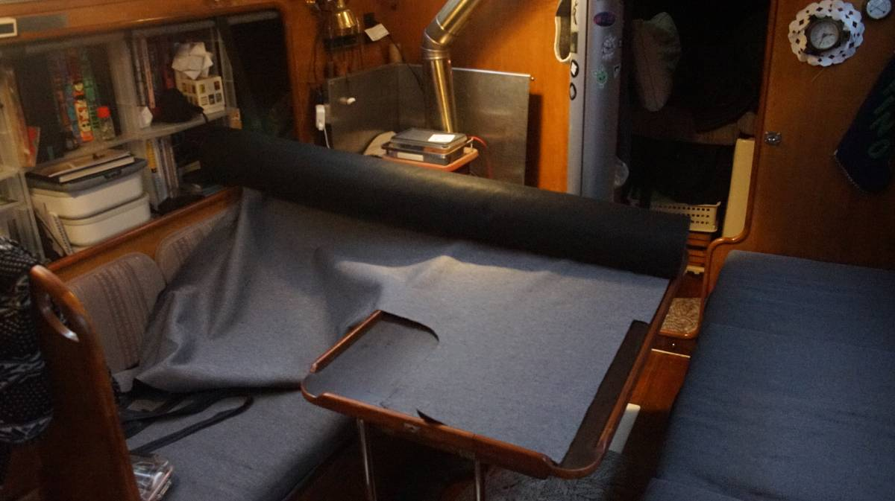
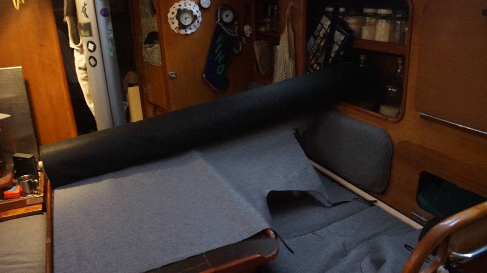

making saloon cushions
2023.11.23
Victoria, BC, Canada.
When we first walked aboard Pino, we remember thinking that the upholstery wasn't great. We made plans to replace it, but we soon forgot about it, the plan having fallen on the lowermost rung of our ever growing to-do list. As green sailors we were more concerned with aesthetics, but as we grew saltier we began to instead prioritize workability and durability. We thought the cushions ugly, but they were comfortable. Pino's upholstery decor would stay as it is.
The cushions in the saloon suffered the most. Time and wear leached off what little color they had left, and their once-plump foam began to compress and thin out, reaching a state of flatness we never thought was possible. We live and sleep(see bed) on the saloon cushions, ugly upholstery is not ideal but a cushion nearing the thickness of a yoga mat, much less so. The wave event of 2020 moved "new upholstery" up a few rungs when a full bottle of soybean oil leapt out of the fridge and emptied its contents on the port side cushions (yes, we've been living with these same cushions since that time, our to-do ladder is kept full).
As with all of our projects, our plan was to do everything ourselves. This year we would refresh the saloon upholstery, and the rest(quarter and v-berth) would come later. Have we ever done upholstery? No, never, but that never stops us from trying.
What we chose
Sometimes the most ideal choice is not what we end up with, because of cost and material availability(we always prioritize locally-available materials, whatever we can walk/cycle to):
- Royal Foam 1kg(2.0 lbs) firmness
- Polyester fabric, 50,000+ double rubs
If you need help choosing materials, see choosing upholstery foam and choosing upholstery fabric.
We went to the store with the goal to buy a few yards of fabric and a foam sheet of our choosing, but instead walked out with the idea of buying a foldable travel bed, and to tear it apart.
The store we visited makes foldable travel beds in various sizes(personal|68x188cm|27x74in, single, double, and queen), with each cushion joined up together with stitches. The foam is 10cm(4in) thick 1kg(2.0 lbs) polyurethane(not antimicrobial), pre-upholstered with polyester fabric(with zippers for each compartment). We couldn't choose the material, only the color(with 6 to pick from). The fabric is polyester, fine for our uses and rated for 50,000+ double rubs. We chose the charcoal-colored material(it's a bit light for charcoal, but oh well).
Cost of DIY'ing the cushions:
- 54x74x4 sheet of uncut foam: 359$
- 6 yards of fabric: 132$
- Poly Batting: 40$
- Plus 6x50in zippers: 30$
- Total: 561$(CAD)
Cost of pre-made:
- 2x 68x188cm(27x74in) travel beds(with fabric, zippers): 418$
- Poly Batting: 40$
- Total: 458$(CAD)
We bought two 68x188cm(27x74in) travel beds. Buying these pre-made beds(which happened to be on sale) was cheaper than buying a sheet of foam, zippers and fabric separately, because companies are able to buy materials in bulk and can mass-produce cushions at a low cost. DIY'ing a thing isn't always the cheapest route.
Each cushion aboard Pino is 63.5x63.5 cm(25x25in), these cushions were near-perfect size. We realized that they'd occupy more width than before, but sometimes foam is over cut by up to a 1.27cm(1/2in) in order to achieve a tighter final look inside the upholstery, in our case the extra width keeps the cushions from shifting around.
We bought a roll of poly batting to layer over the top and sides of each cushion to make them more comfortable, and to round off the edges. We didn't glue the batting on, just laying it over the foam and holding it as it is inserted was enough (edit: the poly batting does shift a little bit inside, we don't mind but it may be better to glue it on if you don't want that to happen).
As previously mentioned, this is a travel bed and all of the cushions are bound together so that they can fold up on top of one another for quick storing. We had to remove the stitching between all of the cushions, and to re-stitch a few (removing the stitches un-did one whole side of 2 cushions).
Cutting Foam
Foam stores use a foam-cutting tool that was too expensive for us to consider, others use hot knives(we don't want one). Our plan was to use a good bread knife(not an electric one), for its serrated teeth and length. See this video on how to do it. But we also learned that it's possible to use hacksaw blades(this seems like the better option) to do it.
It is difficult for us to recommend a tool because we ended up not having to cut it ourselves, but we thought we'd mention what we found during our research. We will have to cut foam someday, we'll update this bit to say what works best.
The cushions fit really well in our space and are very comfortable to sleep on!
Buying fabric
We plan to re-use the foam already in the v-berth and in the quarter berth. We don't use those areas much, the foam still looks fine and so we'll only redo the covers.
We measured all of the cushions onboard our boat, and then used Sailrite Fabric Calculator to figure out how much fabric we'll need (for v-berth, quarter berth and other bits around the boat). We bought 15 m (16 yards) of fabric from a local retailer(the same fabric matching the ones used for our cushions) for a total of 360$.
 Of course, cutting fabric in a boat is a challenge, but we found a way to make cuts for the backrests on our little table. We had to move the roll of fabric around a lot, and to remove items from nearby shelves so it would fit sideways.
See our other upholstery projects: